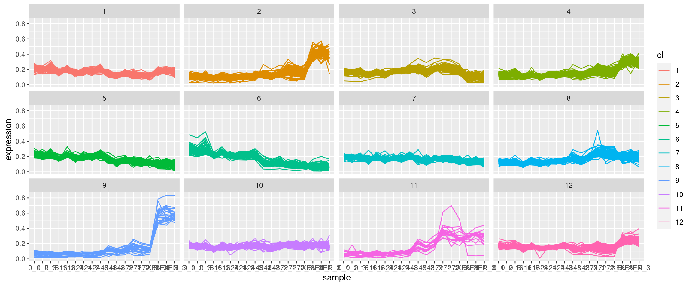
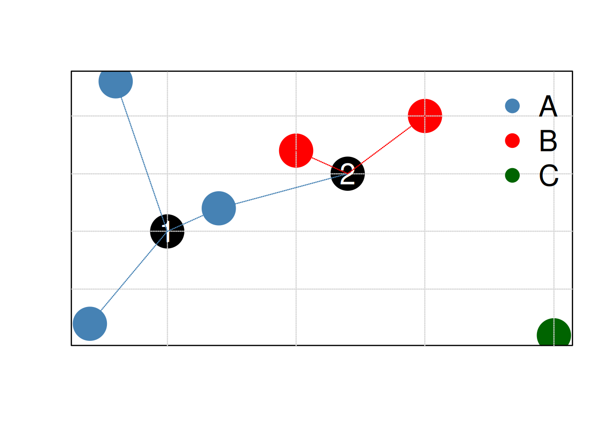
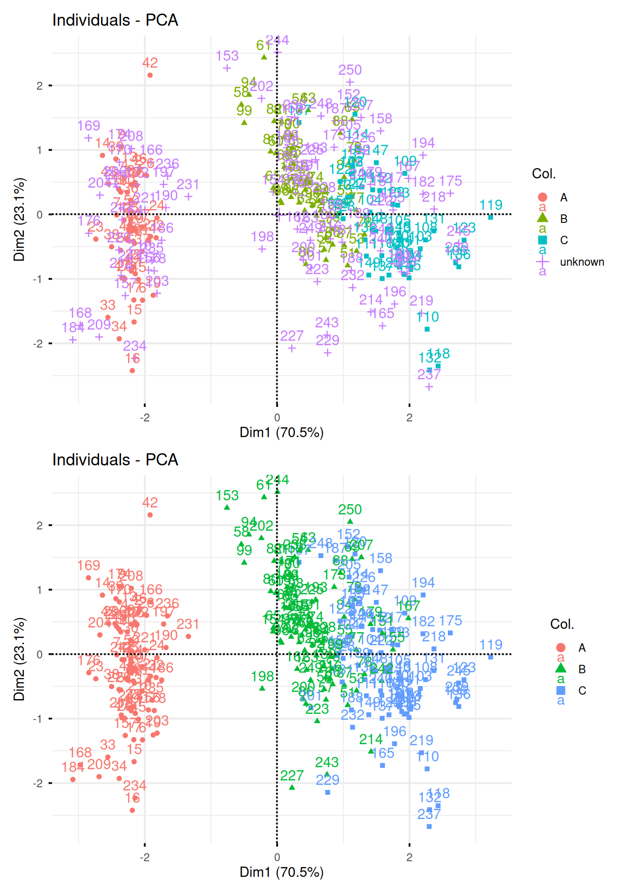
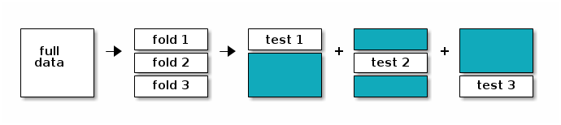

The goal of this last chapter about machine learning will be supervised learning, and in particular classification. In this chapter, you will learn
Often, we faced with omics data, we have annotations for some of the samples (or features) we have acquired:
Among the 100s of patient tumours that were assayed using RNA sequencing of microarrays, we know the grade of the tumour for about half. We want to predict the grade of the other half using the gene expression profiles.
We have performed a spatial proteomics experiment such as in Christoforou et al. (Christoforou et al. 2016Christoforou, A, C M Mulvey, L M Breckels, A Geladaki, T Hurrell, P C Hayward, T Naake, et al. 2016. “A Draft Map of the Mouse Pluripotent Stem Cell Spatial Proteome.” Nat Commun 7: 8992. doi:10.1038/ncomms9992.) (see section 8.7.2) and know the sub-cellular localisation of some proteins. We want to predict the sub-cellular localisation of the other proteins using the protein profiles.
In both of these examples, the quantitative data are the data that we want to use to predict properties about samples or features; these are called the predictors. The grade of the samples in the first example and the protein sub-cellular localisation in the second one are the labels that we have in some cases, and want to predict otherwise. We can thus split our data in two parts, depending whether we have labels, or whether we want to predict them. The former are called labelled, and the latter unlabelled.
Figure 10.1: In supervised learning, the data are split in labelled or unlabelled data. The same applies when some of the columns are labelled.
In the figure above, the labels represent categories that need to be inferred from the predictors. This class of supervised learning is called classification. Classification are also split into binary classification when there are only two classes, or multi-label problem when, like above, there are more than two. The latter is a generalisation of the binary task. When the annotations are continuous values, the situation is referred to as a regression problem.
► Question
Load the giris2 data from the rWSBIM1322 package (requires version >= 0.1.13). Identify the labelled and unlabelled data; how many are there respectively.
► Solution
► Question
Visualise the giris2 data on a PCA plot, highlighting the labels (or absence thereof). Using the visualisation, will the classifying of the unlabelled data will be difficult or easy? Motivate your answer.
► Solution
In this chapter, we’ll use a simple, but useful classification algorithm, k-nearest neighbours (kNN) to classify the giris patients. We will use the knn function from the class package.
K-nearest neighbours works by directly measuring the (Euclidean) distance between observations and inferring the class of unlabelled data from the class of its nearest neighbours. In the figure below, the unlabelled instances 1 and 2 will be assigned classes A (blue) and B (red) as their closest neighbours are red and blue, respectively.
Figure 10.2: Schematic illustrating the k nearest neighbours algorithm.
Typically in machine learning, there are two clear steps, where one first trains a model and then uses the model to predict new outputs (class labels in this case). In kNN, these two steps are combined into a single function call to knn.
► Question
Separate the giris2 data into two new datasets, one containing the labelled data that will be used to train the model and named giris2_train, and a second one containing the unlabelled data called giris_test.
► Solution
The knn function takes, among others14 we will see additional ones later., the following arguments:
► Question
Apply the kNN classifier on the giris2 prepared in the previous exercise.
What is the class of the output?
How many of the unlabelled data have been assigned to the different grades?
► Solution
► Question
Visualise the results of the kNN classification on a PCA plot and interpret the results based on the first PCA.
► Solution
► Question
Can you identify some questionable results? Explore the results for patient 167, that was assigned group B.
Do do so, calculated the distances between sample 167 and all other labelled data.
Compare the labels of its 15 closest labelled data points.
► Solution
As we have seen, the number of nearest neighbours k has an important influence on the classification results. We can now refine our understanding of the knn function; it has the following arguments:
TRUE, the prob argument also return the proportion of votes in favour of the assigned class.► Question
Repeat the kNN search comparing k=1 (as in our first attempt) and k=11 and compare the result.
Which one is correct?
► Solution
There is no way to decide which set of results above, using k=1, 2, … 11 or any other value for k is better. At least not while proceeding as above. To be able to make an informed decision about the model parameter k, we need to to measure the performance of the kNN classifier for different values of k. Do do so, we are going to create training and testing sets using the labelled data. Each of these will be composed by a certain proportion of the original labelled data.
Below, we denote the training predictors \(X_{tr}\) and labels \(Y_{tr}\) and the testing predictors \(X_{te}\) and labels \(Y_{te}\).
Figure 10.4: Training and testing sets.
We are now going to do the following procedure
There are numerous different ways to measure the performance of a classifier using \(Y_{tr}\) and \(Y_{tr}^{predicted}\). We are going to focus on the classification accuracy, counting the proportion of correct results.
► Question
Choose 100 random labelled data points to define the training data. Use the 50 others as test data.
► Solution
► Question
Run two kNN classifications, one with k = 1, then one with k = 11 and compare each to the true results. A good way to assess the results is to generate a contingency matrix (using the table function) that tallies matches and mis-matches between the predictions and expected assignments. Interpret these results.
► Solution
► Question
Calculate the classification accuracy of the two classifiers above.
► Solution
There are now two adjustments that we can do improve on the procedure above:
Test all odd value of k from 1 to 11 (or higher, if deemed useful), to have a better granularity of the model parameter we test.
Testing more than on training/testing split using. Indeed, relying on a single split we rely on a random split, that could affect that results either overly optimistically, or negatively. We prefer to repeat the split a certain number of time and calculate an average performance over all splits.
There exist several principled ways to split data into training and testing partitions. Here, we are going to focus on k-fold cross-validation, where data of size \(n\) a repeatedly split into a training set of size around \(\frac{n (k - 1)}{k}\) and a testing set of size around \(\frac{n}{k}\).
In practice, the data are split into k partitions of size \(\frac{n}{k}\), and the training/testing procedure is repeated \(k\) times using \(k - 1\) partition as training data and 1 partition as testing data.
The figure below illustrates the cross validation procedure, creating 3 folds. One would typically do a 10-fold cross validation (if the size of the data permits it). We split the data into 3 random and complementary folds, so that each data point appears exactly once in each fold. This leads to a total test set size that is identical to the size of the full dataset but is composed of out-of-sample predictions (i.e. a sample is never used for training and testing).
Figure 10.5: The data is split into 3 folds. At each training/testing iteration, a different fold is used as test partition (white) and the two other ones (blue) are used to train the model.
After cross-validation, all models used within each fold are discarded, and a new model is built using the whole labelled dataset, with the best model parameter(s), i.e those that generalised over all folds. This makes cross-validation quite time consuming, as it takes x+1 (where x in the number of cross-validation folds) times as long as fitting a single model, but is essential.
► Question
Use the createFolds function from the caret package, passing it the labelled tags, to create 10 folds. Verify that each sample is present only once.
► Solution
► Question
Focusing now k=11 and using the folds above, calculate the classification accuracy in each case and compute the average accuracy for k=11.
► Solution
► Question
Repeat the above for k=1, 3, 5, … to 30 and plot the average accuracy as a function of k.
► Solution
As we can see from the last exercise, most values of k give a good classification accuracy, ranging from 96% to 98%, and it would be difficult to identify a single best value for k. Indeed, the three groups we are typing to assign new data to are relatively well separated and the little uncertainty that we observe is most likely due to some instances that lie at the boundary between classes B and C.
There exist a variety of packages (for example caret, tidymodels or mlr) that automate model and parameter selection using cross-validation procedures as illustrated above, so that in practice, these tasks can be automated. This becomes particularly useful when more than one model parameter (called hyper-parameters) need to tuned, different classifiers need to be assessed, and/or several model performance metrics are to be computed.
A recurrent goal in machine learning is to find a trade-off between variance and bias when fitting models. It is important to build a good model using the data at hand, i.e. that learns from the data, but not too much. If the model is too specific for the data that was used to build it (the model would be said to be over fitting the data) and would not be applicable to new data (the model would have high bias). On the other hand, a model that is too general, that wouldn’t be applicable enough to the data, or type of data at hand[^varex], it would perform poorly, and hence lead to high variance.
This variance and bias trade-off can be illustrated in different ways. The figure below shows the prediction error as a function of the model complexity. In our example above, we have used accuracy, a metric that we want to optimise, while in the prediction error is a measure to me minimised.
Figure 10.7: Effect of model complexity on the prediction error (lower is better) on the training and testing data. The former decreases for lower values of \(k\) while the test error reaches a minimum around \(k = 10\) before increasing again. Reproduced with permission from (James et al. 2014James, Gareth, Daniela Witten, Trevor Hastie, and Robert Tibshirani. 2014. An Introduction to Statistical Learning: With Applications in R. Springer Publishing Company, Incorporated.).
The model complexity represent the ability of the model (or model parameter) to learn/adapt to the training data. In our case, the complexity would be illustrated by\(\frac{1}{k}\): when k=1, the model becomes very complex as it adapts to every single neighbour. The other extreme, when k becomes large, the classification will tend to using an average of so many neighbours that doesn’t reflect any specificity of our data.
Figure 10.8: The kNN classifier using k=1 (left, solid classification boundaries) and k=100 (right, solid classification boundaries) compared the Bayes decision boundaries (see original material for details). Reproduced with permission from (James et al. 2014James, Gareth, Daniela Witten, Trevor Hastie, and Robert Tibshirani. 2014. An Introduction to Statistical Learning: With Applications in R. Springer Publishing Company, Incorporated.).
This last figure, reproduced from (Holmes and Huber 2019Holmes, Susan, and Wolfgang Huber. 2019. Modern Statistics for Modern Biology. Cambridge Univeristy Press.), frames the variance-bias trade-off as one between accuracy and precision. An over-fit model with high bias and low variance is one that is precise but not accurate: it could work extremely well on the training data but miss on new data, thus lacking in generalisation power. Conversely, an under-fit model could be accurate but with low precision: on average, it works will, but is unable to provide a precise answer. Ideally, we want models that achieve good precision while still being applicable and accurate with new data.
Figure 10.9: Precision and accuracy when shooting.
Load the hyperLOPIT2015 data from the pRolocdata package. See section 8.7.2) for details. The features variable column markers defines the proteins for which the sub-cellular localisation is known - these are the labelled data. Those that are marked unknown are of unknown location - these are the unlabelled data.
► Question
Perform a kNN classification setting k=5.
► Question
To assess the results of this classification, visualise the data on two PCA plots, one before and one after classification.
You can use the following colour palette that uses grey for the unlabelled data.
cls <- c("#E41A1C", "#377EB8", "#238B45", "#FF7F00", "#FFD700",
"#333333", "#00CED1", "#A65628", "#F781BF", "#984EA3",
"#9ACD32", "#B0C4DE", "#00008A", "#8B795E", "#E0E0E060")
► Question
Asses the choice of k=5 used above.
► Question
Compare you results with those that were obtained using support vector machine, a popular classifier that was used in Christoforou et al. (Christoforou et al. 2016Christoforou, A, C M Mulvey, L M Breckels, A Geladaki, T Hurrell, P C Hayward, T Naake, et al. 2016. “A Draft Map of the Mouse Pluripotent Stem Cell Spatial Proteome.” Nat Commun 7: 8992. doi:10.1038/ncomms9992.), and available in the svm.classification feature variable.
► Question
A classification algorithm will assign a class to any unlabelled instance, even if it doesn’t match any of the prodided classes. This is often the case in omics datasets such as the spatial proteomics example above, where not all the sub-cellular niches are annotated or known. We thus know that some of these assignments will be wrong from a biological point of view.
Re-run the kNN classifer above, setting prob = TRUE to get the proportion of votes in favour of the assigned class. These are stored as an attribute named prob; eead the knn manual page to learn how to extract these from the knn output variable.
Based on these vote proportions, which results to you consider the most reliable?
Re-generate a PCA plot keeping the classification results for the most reliable assignments one, and setting the unreliable ones to unknown.
Page built: 2019-11-30